Meet Mai. A smartband for the women who never come first.
Most women in India look after everyone else first. They come last. Mai is a smartband and an app that gently helps them care for their own health too.
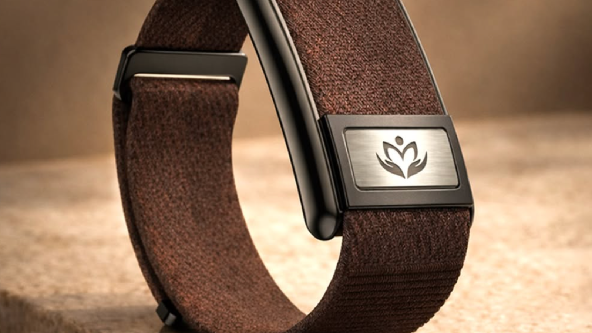
Make a health app women will actually use every day.
It sounded easy. Build a smartband and an app for women's health. Make it simple enough to open every day.
But the more we listened, the more we saw the real problem. It was not about features. It was about habit. Women are taught, in quiet ways, to put themselves last.
One woman dies every ten minutes. And nobody is designing for why.
In 2010, UN data showed about 57,000 mothers died in India. That is one every ten minutes. Things have got better since then. But Madhya Pradesh still has one of the worst rates in the country. This number is where we began.
But a number does not tell you what to build. We needed to see what was really going on. Not in city clinics. In the villages, where the problem was worst.
Our first guess: women's health gets ignored because they do not get enough information.
What we found on the ground changed our minds.
We went to Madhya Pradesh and listened to 100 women.
No surveys. No tidy forms. Just real talks with real women, from 16 to 50 years old, in their own homes and villages.
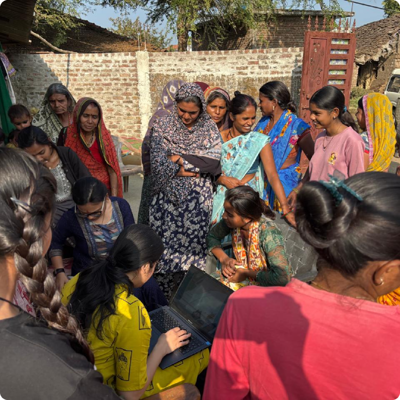
Visiting women in rural India. We listened first, then designed.
-
01
What we expected to find
Less knowledge. Hard to reach a doctor. Not enough information.
-
02
What we actually found
Many of these women had PCOS. We did not ask them straight, because they had never heard of PCOS. We worked it out from their symptoms and daily habits. From the outside they looked active and strong. Inside, they were living with a condition that millions of Indian women have, and no one talks about.
-
03
The real reason
They were not skipping meals because they were poor. They were not ignoring their health because they did not know better. They did it because their whole sense of self was built around family and work. Their own needs never made the list. Not from not knowing, but from love.
"It was not about what they did not know. It was about what they never had the time, or permission, to do."
What this changed: the problem was not information. It was behaviour. That one shift changed how we designed everything that came next.
Make it small, safe, and personal, and women will actually do it.
Three bets we made before we started designing:
Small, not complete
A hard plan never gets started. Daily tasks had to be so small that skipping felt harder than just doing them.
A signal, not data
These women were not going to read graphs and numbers. Health had to feel like a simple signal. Good, or needs care. More detail only if you want it.
Growth, not streaks
A streak punishes you for missing one day. That is the last thing a woman who already feels like she is failing needs. We needed something that could bounce back.
Four parts. Each one fixes a real problem.
We do not guess your health. We start with your real symptoms and blood reports. Then we build a plan from there. No generic advice.
Many of these women cannot read much, and they speak many languages. So every setup screen uses pictures, not instructions. Simple words. Their own language. A woman in a village should be able to finish setup without reading a single paragraph.
Your daily tasks come from your own health data. Small enough to actually do.
We chose a tree. Finish your tasks for the day and a new leaf grows. The more you do, the greener it gets. Miss a day and the leaf dries up and turns brown, but the tree does not die. It starts growing again the moment you come back.
We picked this instead of a streak counter on purpose. Streaks make you anxious and punish you for gaps. A tree says something kinder. Growth is not a straight line. Missing a day does not erase your progress. The plant stays alive as long as you keep showing up. For women who already feel like they are never doing enough, that mattered.
Health data can feel scary. We made it feel light.
The dashboard shows three things: Body, Energy, Mind. Each one says good, or needs care. Want the detail? It is one tap away. We built this for women who are not used to health words. You should understand it even if you do not know what heart rate or SpO2 means.
Talking about women's health in India is still hard. Conditions like PCOS carry shame. Mai is a friend that feels warm and never judges. No silly questions. No doctor words.
There is also a fifth part, a learning feed. It brings in Vedic wisdom, yoga, breathing, and recipes. It looks like Instagram or YouTube, so it never feels like homework.
What it actually looks like.
Soft, calm, and warm. Made for every day, even a slow one.
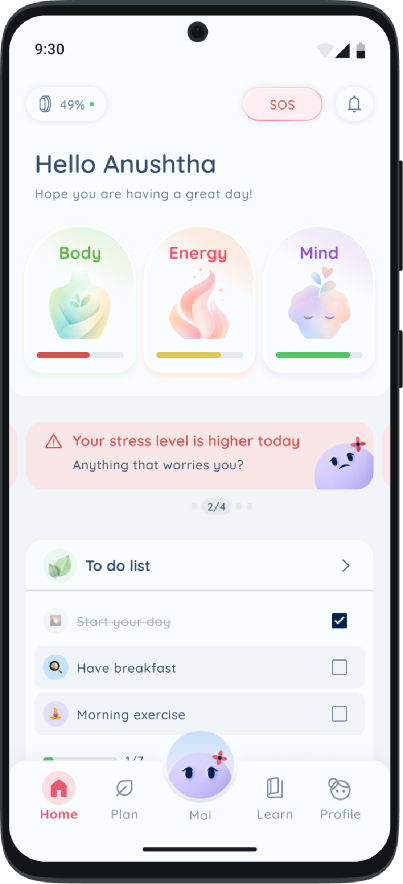
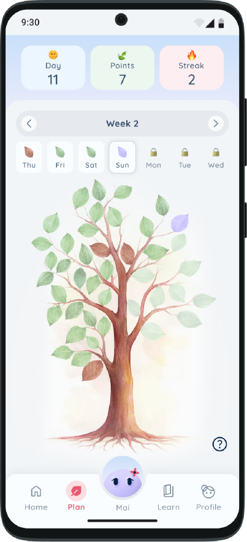
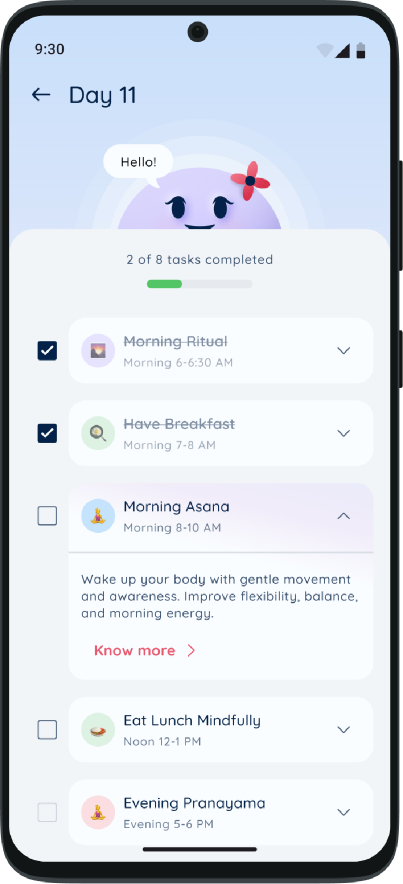
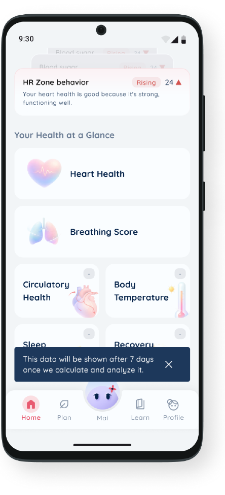
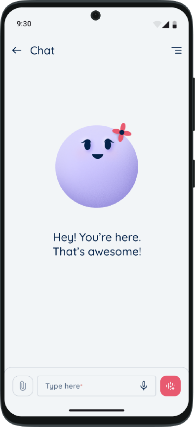
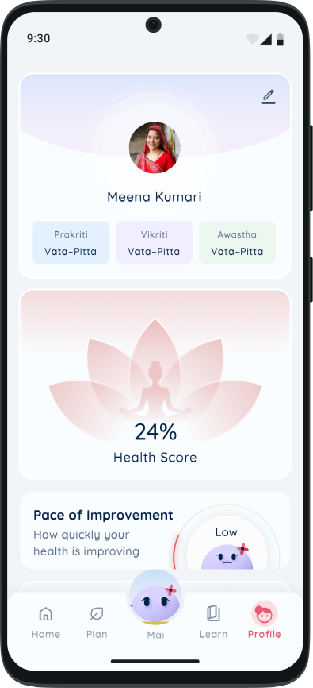
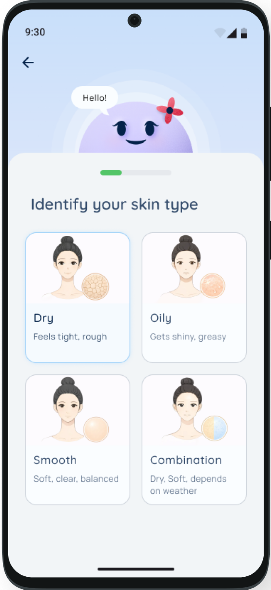
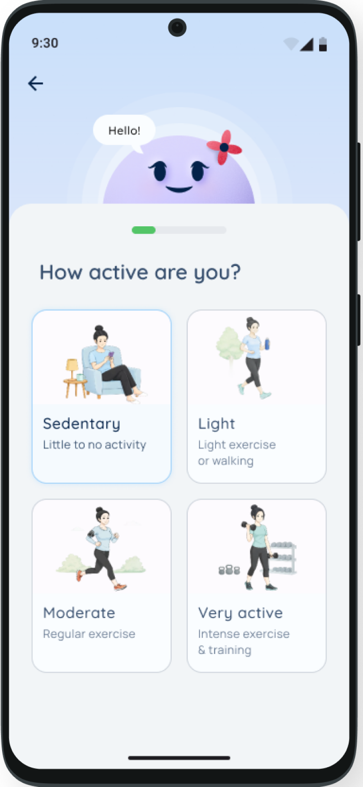
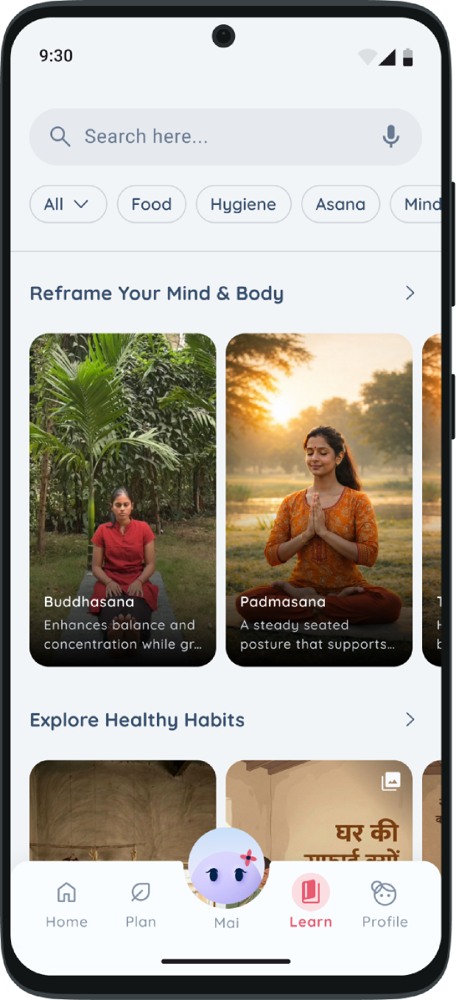
Built for villages. Works in cities too.
We shipped it. The same design that works for a 30 year old woman in a village also works for a 25 year old in Mumbai. The big choices, simple signals, small tasks, no shame, are good design for anyone. Not just for people who cannot read much.
The app does not assume you speak English. The picture led setup does not assume you can read. These were not extras we bolted on at the end. They were the plan from day one.
We put Mai in real hands.
Once it shipped, we watched real women use it. Here is what they told us.
It was easy to use and easy to find your way around.
The growing tree gave them a real sense of progress, and kept them coming back.
The band helped them stay aware of their daily health without much effort.
The personal touches made it feel made for them, not for everyone.
Yoga and other wellness activities fit right into their day.
Some older users felt setup was too long. There were too many steps before they reached the main app. This is the first thing we want to make shorter.
If I kept building, here's where I'd go next.
The next Mai should be less about data and more about real change. Three things I would push:
Older users told us setup felt too long. So this comes first. Fewer steps. Ask only what we really need up front, and let the rest come later. The goal is that an older woman can be up and running in a minute, with bigger text and even simpler screens made just for her.
The app still shows too much. Every screen should pass one test. Does this make it easier for a woman to take one small step today? If not, it should not be there.
I would measure what really changes in women's lives. Not app opens or tasks ticked off. Whether they eat more often, sleep better, and feel more in control of their health. That is harder to track. But it is the only number that really matters here.
The quiet part of the work.
Every choice in this product had to pass one test: does this make it easier for a woman to put herself first?
Lessons from designing for real lives.
"The research changed the product."
We started out thinking it was an information problem. We came back knowing it was a permission problem. That is a totally different brief. It only became clear because we left the studio and went to them.
"Simple is a choice, not a style."
Every time we showed less, made a signal simpler, or cut a feature, it was a real decision about who we were designing for. Simple, on purpose.
"How you reward people matters."
The tree is not just a cute picture. It is a belief about how habits form, and what forgiveness looks like in an app. That choice came straight from understanding the user. A woman who already feels she is never doing enough.
"Health doesn't change with data. It changes with action."
Mai is a small push in that direction